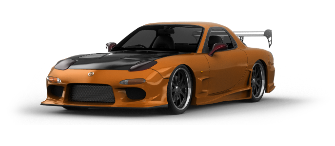
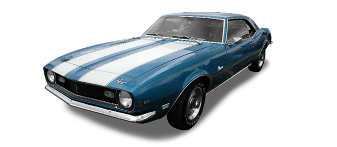
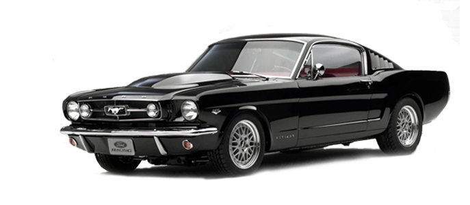
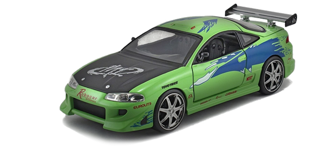
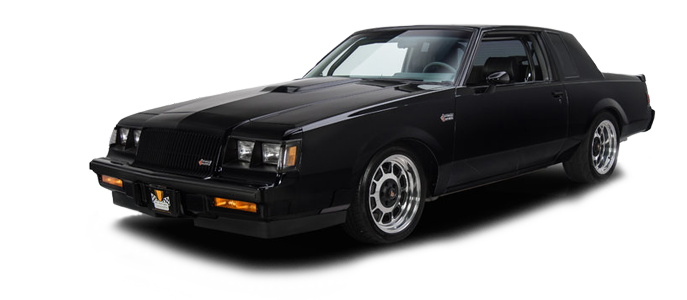
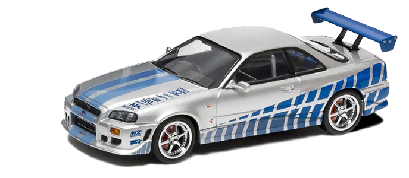
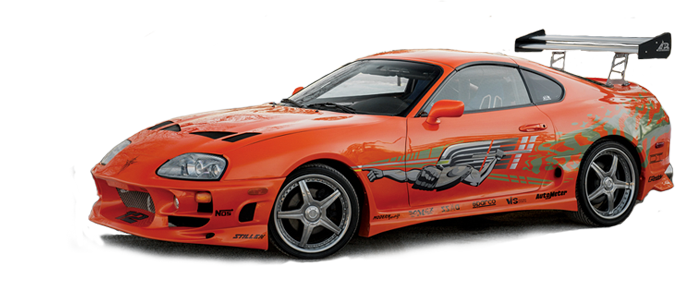
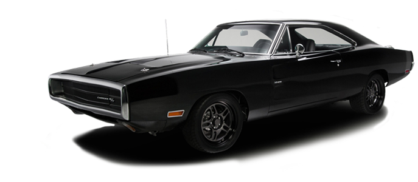
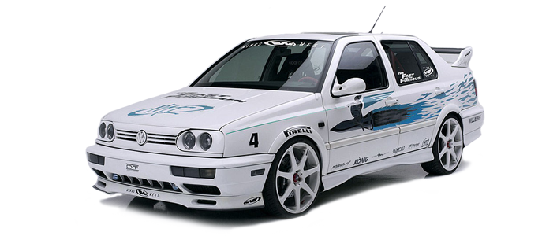

-

1997 MAZADA RX-7
Tough call here : Was the RX-7 goof enough on its own or did the body kit on Han's car totally complete the look? It's not at all on easy decision. The dinal and arguably best-looking RX-7 only came to the U.S. from 1993 to 1995 : the Japaness market enjoyed the full of the last generation from 1992 to 2002.
-

1969 CHEVROLET CAMARO YENKO
To nin- car guys, a jumping Yenko sounds like a circus act, but in Fast2 Furious it was a handy way of Brian O'connor to board a yatcht. it was caused damage you can't just buff out, but it did save Monica Fuente. Wasting a rare music car to save Eva Mendes. In reality. even if you could find a guy willing to part with his genuine Yenko(there are of clones), you would have to bring Eva along for negotiations.
-

1967 FORD MUSTANG FLASHBACK
It looks hot & won the against a nissan 350Z in the "honour race" through the mountains. but as the story goes. it was with Nissan power. Granted, he engine came from a Silvio (240SX to us). but this is degree of East-meets-West too for pony car enthusiast. Yes, we reailze it was all make believe. bu even the stimulation of such heresy put this car at the back of the bunch.
-

1995 MITSUBISHI ECLIPSE
Brian O'Connor's (Paul Walker) addition of nitrous to his Eclipse put it on the fast trak to bacome on early casualty in the first movie. but the eclipse lived on as a go-to car for tuners. and for good reason. Cars like this second-generation model were inherently styled well as a basis for body kits. while their engines were a decent platform for modeification-to a degree.
-

1987 BUICK GRAND NATIONAL GNX
Ordinarily, the idea of watching V6 Buicks on the big screen is about as stirring s listening to Buick owners blather about their arthritis. in Fast & Furious. however, Dominic Toretto has graduated from his Civic & uses this as his hijacking weapon of choice. it's not just the rare. Regal-based Grand National, But the even scarcer 87-only GNX, This high point in modern GM performance finds a blurred Buick the resuslt of speed. not cataracts.
-

1999 NISSAN SKYLINE GT-R
Admit it. You have a Skyline fetish--and so does Brian O'Conner. It's cool, that''s why we have no probleum whatsoever with the frequency of these car's appearances in the serise. The new, America-friiendly Nissan GT-R is brilliant, but theese will always be a mystique surrounding the all-but-inaccessible predecessor. There's nothing wrong with the blue model in Fast & furious. but there's really nothing wrong with the silver car in 2Fast 2Furious.
-

1995 TOYOTA SUPRA TURBO
It spanked a Ferari. It raced a Charger to it doom. it's a nitrous-fortified orange crush of a toyota Supra. Although this car got more than a little face time in the movie (how could you miss it?). the last and fastest Supra could be considered the best. just like the final RX-7 mentioned earlier. And like the Mazada, America has shorter exposure to this generation, available here from 1993 to 1998, but it sold in Japan through 2002. Sadly, Toyota's enthusiasm for performance hasn't been the same since.
-

1970 DODGE CHARGER
You remember hoow you got all verklempt at the end of the Fast and the Furious when Dominic's Charger met it's doom? So this couln't possibly be the same car in the fast & Furoius, right? Well, this is Hollywood, pal. if Vin Disel can land speaking roles, shredded vintage Chargers can play Lazarus. Besides, the car is like the franchise. It's been rebuilt updated for another spin. but the first look was the best of the and the one worth remembering.
-

1995 VOLKSWAGEN JETTA
Jesse and his white V-Dub don't get a ton of time anscreen in the original movie. but we're icluding the Jetta for a couple reason. First, It's one of the few European cars seen in the series, Second. It's a solid choice for enthusiasts. Without any modifications, a stock Jetta offers acceptable performance and crisp handling: both traits are easy enhanced to meet turner's demands without as much effort or compromise as some more popular Asian and American cars.